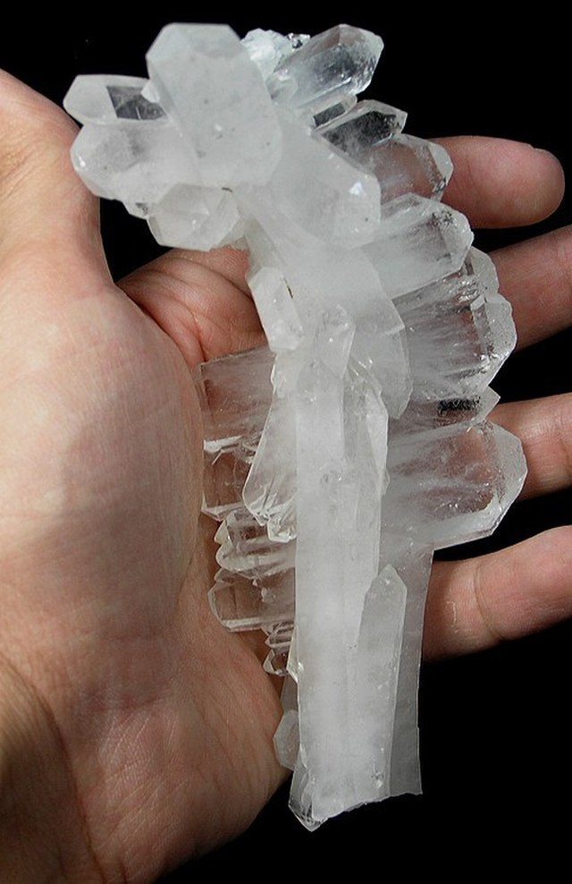
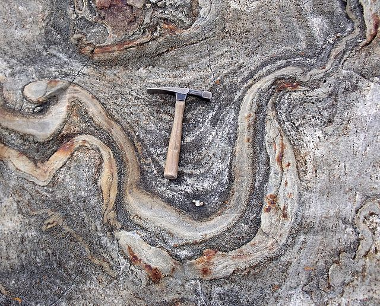

Hey there, rock lovers! I'm Nathan, your go-to guide for all things geological in Boston. With a solid background in geology and a heart full of wanderlust, I roam the city's nooks and crannies in pursuit of fascinating rocks and minerals. There's something magical about deciphering the Earth's history through its rocky layers, and I'm here to share that magic with you. So, lace up your hiking boots and let's embark on an adventure through Boston's geological wonders together!
| Title | Desc | Date | Image | Tags |
|---|---|---|---|---|
| Weekend Finds: Quartz and More! | Jan. 15 2024 | This weekend I was mining North of Boston, eager to delve into the geological wonders hidden beneath the surface. Have you ever wondered what lies beneath the rocky terrain that blankets the area? Well, join me on this journey as I uncover some fascinating finds from my weekend exploration... |  | #weekend-finds#minerals |
| My Favorite Geological Exhibitions and Attractions in Boston | Dec. 14 2023 | As a geology enthusiast residing in Boston, I've had the pleasure of exploring some of the city's most captivating geological exhibitions and attractions. Join me as I take you on a tour of my favorite spots, where you can immerse yourself in the fascinating world of rocks, minerals, and earth science... | #around-boston#education#minerals | |
| Top 10 Tools Every Rockhounder Needs in their Kit | Nov. 2 2023 |
Embarking on a rockhounding adventure? Make sure you're equipped with the right tools to uncover geological treasures with ease. Here are the top 10 tools that every rockhounder needs in their kit:
|
 | #education#beginners |